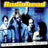

The Best Thing You Ever Had
Kiss The Sky, KTS 590
Tracks 1-15 from The Avalon, Boston 13/Apr/96
<1> My Iron Lung
<2> Bones
<3> High & Dry
<4> Bulletproof.. I Wish I Was
<5> Street Spirit [Fade Out]
<6> Planet Telex
<7> Stop Whispering
<8> Nice Dream
<9> Lucky
<10> Creep
<11> Lurgee
<12> Anyone Can Play Guitar
<13> Just
<14> Blow Out
<15> Fake Plastic Trees
Track 16 from Milton Keynes, England 30/Jul/listed as 96, but more likely 95
<16> The Bends
Type of recording : Radio Broadcast
Quality : Excellent
Notes : Track 16 not quite as good quality. Rest is excellent
with very little crowd noise. CD is identical to Boston '96, and nearly identical to Data Complete.